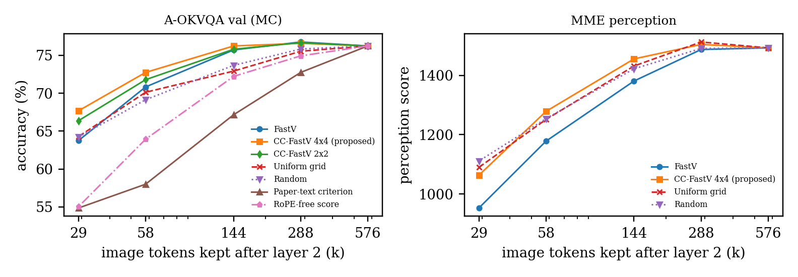
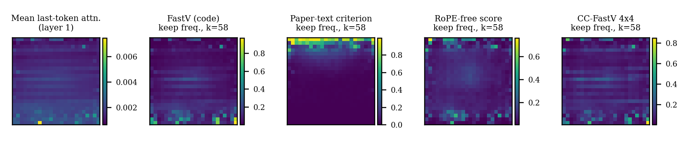

v1.0-submission)Motivation. In LLaVA-1.5 a 336×336 image becomes a 24×24 grid of CLIP patch features projected into 576 tokens, the large majority of a typical prompt, so they dominate the prefill cost and the KV-cache memory. FastV [1] showed that most image tokens can be dropped after layer 2 by keeping those that the last text token attends to most, and became the standard baseline of the area [2–7]. FEATHER [5] re-examined this approach and made three claims AUTHORS: (C1) after shallow layers the ranking keeps tokens concentrated at the bottom of the image; (C2) the cause is RoPE's long-term decay, because image tokens are flattened in raster order and the bottom rows are closest to the text; (C3) computing the score without RoPE (φ-R) removes the bias and improves accuracy, especially on localization. FEATHER established these claims on one LLaVA-style model (SigLIP + Llama-2-7B) at K=3. Whether they transfer to the widely used LLaVA-1.5-7B, and whether removing RoPE is the right remedy compared with simply enforcing spatial coverage, is the gap this project addresses.
Contributions. (i) A survey and a seven-field comparison matrix of seven papers on visual token reduction (§2). (ii) A Hugging Face re-implementation of FastV-style pruning, checked against the model's own forward pass and against FastV's published A-OKVQA numbers as a sanity check (§4, §7.1). (iii) A test of FEATHER's claims C1–C3 on LLaVA-1.5-7B (§7.2). (iv) A coverage-constrained selection (CC-FastV) compared with FastV, the RoPE-free score, random and uniform-grid controls and a constraint-strength ablation at identical budgets, with paired statistics, a second benchmark and measured latency (§5–7). Throughout, AUTHORS marks claims reported by other papers, MEASURED marks numbers measured in this project (each traceable to a file in the repository), and INTERPRETATION marks my own reasoning.
The search was carried out with the help of an AI assistant (Claude Code, see the AI-use disclosure), which retrieved arXiv records and PDFs and extracted passages that I used to check the claims. It started from the FastV paper [1] and its official repository, then followed (a) its references backwards to the vision-transformer token-reduction work it builds on (EViT [9], ToMe [10]) and to the LLM attention-sink literature [12]; (b) forward citations, using arXiv and Google Scholar queries such as “visual token pruning LVLM”, “training-free token reduction LLaVA”, “FastV random baseline” and “position bias token pruning”; and (c) the comparison tables of the retrieved papers, which name the de-facto standard baselines. Inclusion criteria were: training-free or optional-training methods for LVLM visual tokens, evaluated on LLaVA-1.5 or a close relative, with public code or a clearly specified algorithm, published at a peer-reviewed venue (or, for analysis papers, widely cited). I selected seven papers for in-depth analysis (Table 1) that span the three design axes of the field (where to prune, which signal to use, and how many stages), plus two critical analysis papers that directly motivate my experiment. Every cited paper was opened and its arXiv identifier, title, authors and venue line were checked; facts in the matrix come from the papers' own text.
Token reduction in vision transformers (2021–2023). The idea that not all patches matter predates LVLMs. EViT [9] (ICLR 2022) keeps the patches most attended by the [CLS] token and fuses the rest into one token; ToMe [10] (ICLR 2023) merges similar tokens with bipartite matching without retraining. Both operate inside a vision encoder with a classification objective and a [CLS] token whose attention is a meaningful importance signal.
The LVLM setting (2023–). LLaVA-style models [8] connect a frozen CLIP encoder to a decoder-only LLM through a projector; the image becomes a long sequence of “soft” tokens. FastV [1] (ECCV 2024, oral) was among the first to show that these tokens are highly redundant inside the LLM, and that a single attention-ranked cut after layer 2 costs little. Three families followed. (a) Pruning inside the LLM with text-guided attention: SparseVLM [2] (ICML 2025) rates visual tokens with a selected subset of relevant text tokens, chooses per-layer sparsity adaptively and recycles pruned tokens; PyramidDrop [3] (CVPR 2025) drops tokens progressively over several stages, motivated by the finding that redundancy increases with depth. (b) Pruning before the LLM with visual signals: LLaVA-PruMerge [11] and VisionZip [4] (CVPR 2025) use the vision encoder's [CLS] attention to keep “dominant” tokens and merge the rest into a few contextual tokens; VisPruner [14] argues that text-visual attention is not a reliable importance indicator and combines visual attention with similarity-based de-duplication. (c) Diversity and coverage: DivPrune [7] (CVPR 2025) casts selection as a max–min diversity problem in feature space. (d) Critical re-examinations: Wen et al. [6] (ACL Findings 2025) show that random selection and simple pooling beat FastV and SparseVLM on many benchmarks, and identify position bias in attention-based scores; FEATHER [5] (ICCV 2025) traces the bias to RoPE's long-term decay and shows that early pruning silently destroys localization ability while common benchmarks barely notice.
For a decoder layer with heads h=1..H, the attention of query i to key j is Aij(h) = softmaxj≤i(qiTkj/√d). With RoPE, q and k are rotated by angles proportional to their positions, so the logit depends on content and on the relative distance i−j; RoFormer [13] shows an upper bound on this interaction that decays with distance. LLMs also develop attention sinks [12]: the first tokens (here the system prompt) absorb most attention regardless of content. FastV's “inefficient attention” statistic (image tokens receive about 0.21% of the attention that system-prompt tokens receive in deep layers AUTHORS [1]) is a manifestation of these two effects. The cost model used throughout the area counts per-layer FLOPs as 4nd2+2n2d+2ndm for n tokens, hidden size d and FFN size m [1]; Wen et al. [6] caution that FLOPs and token counts are unreliable proxies for wall-clock latency, which also depends on kernels (e.g. FlashAttention cannot return attention scores) and memory traffic.
Almost every paper in this area uses LLaVA-1.5-7B as the reference testbed, reports results at 192, 128 and 64 retained tokens (or the corresponding ratios), and evaluates on a common suite: GQA, MMBench, MME, POPE, ScienceQA-IMG, VQAv2, TextVQA, SEED-Bench, MM-Vet and VizWiz [2–7]. FastV itself used captioning (NoCaps, Flickr30k), A-OKVQA multiple choice [15], MMMU, PCA-Bench, OCR-VQA and video QA [1]. The standard baselines are FastV, SparseVLM, PDrop, LLaVA-PruMerge, ToMe and, after [6], random selection and pooling. As of the papers I reviewed, the strongest training-free results at very low budgets are claimed by encoder-side or diversity-based methods (VisionZip, DivPrune, VisPruner) rather than by in-LLM attention ranking AUTHORS. Two methodological caveats recur: benchmarks dominated by coarse or language-answerable questions under-detect visual information loss [5, 6], and claimed speed-ups are often theoretical.
The core papers appear at computer-vision venues (CVPR: VisionZip, PyramidDrop, DivPrune; ICCV: FEATHER, LLaVA-PruMerge; ECCV: FastV), machine-learning venues (ICML: SparseVLM; ICLR: EViT, ToMe, StreamingLLM; NeurIPS Datasets & Benchmarks: MME [16]) and NLP venues (ACL Findings: Wen et al.). Pre-prints on arXiv usually precede publication by months, and most methods release code on GitHub built on the LLaVA codebase.
INTERPRETATION From the papers above, five problems remain open. (i) What is an importance signal? Text-to-image attention in early LLM layers is confounded by position and by attention sinks [5, 6, 12], while encoder-side [CLS] attention ignores the question [4]; no signal is known to be reliable across tasks. (ii) Importance versus coverage/diversity: [5, 6, 7] show that representing the whole image matters, but how to trade it off against relevance, and whether the trade-off should depend on the question, is unresolved. (iii) Evaluation: popular benchmarks can often be answered from coarse or language cues and under-detect lost visual detail [5, 6]; localization, counting and document tasks are more sensitive. (iv) Real efficiency: FLOPs and token counts do not translate directly into latency, methods that need attention scores conflict with fused attention kernels, and most papers measure single-image prefill rather than serving throughput or KV-cache memory [6]. (v) Generalisation to high-resolution tiling (LLaVA-NeXT), multi-image and video inputs and models with 2-D position encodings, where the raster-order bias may take a different form.
Table 1 analyses seven papers along the seven required fields. Statements are the authors' claims AUTHORS unless written as an assessment; the “limitations and connections” column contains my interpretation INTERPRETATION.
| Paper | Question & contribution | Modalities & assumptions | Mechanism & objective | Data & protocol |
|---|---|---|---|---|
| FastV [1] ECCV 2024 | Image tokens get little attention after layer 2; prune them inside the LLM. New: first plug-and-play in-LLM visual token pruning for LVLMs, plus the “inefficient visual attention” analysis. | Image/video + text at inference only; no training. Needs attention probabilities at layer K−1 (eager attention for that layer). | At layer K, rank image tokens by head-averaged attention (code: from the last token; paper text: average received), drop the lowest R%. No new objective; frozen next-token model. | NoCaps, Flickr30k (CIDEr), A-OKVQA val MC, MMMU dev, PCA-Bench, OCR-VQA, MME, SEED, MM-Vet, SciQA-IMG, AI2D, TGIF/MSVD/MSRVTT; greedy decoding. |
| SparseVLM [2] ICML 2025 | Visual tokens should be rated by the text that needs them. New: text “raters”, adaptive per-layer sparsity via matrix rank, token recycling. | Image/video + text; training-free. Assumes the question contains relevance information. | Self-attention between selected text tokens and visual tokens scores tokens over several layers; pruned tokens are compressed (recycled) rather than discarded. | GQA, MMBench, MME, POPE, SQA, VQAv2, TextVQA, SEED, MM-Vet; LLaVA-1.5, Mini-Gemini, Qwen(2)-VL, video models. |
| PyramidDrop [3] CVPR 2025 | All tokens are needed in shallow layers, redundancy grows with depth. New: multi-stage “pyramid” dropping for both training and inference. | Image + text; can be used training-free or during instruction tuning (requires re-training). | Partition the LLM into stages; at each stage end drop a fixed fraction (default λ=0.5) of image tokens ranked by their attention with the last instruction token. | GQA, MMBench, MME, POPE, SEED, SQA, TextVQA, VizWiz and others; LLaVA-1.5 and LLaVA-NeXT. |
| VisionZip [4] CVPR 2025 | Redundancy originates in the vision encoder. New: select “dominant” tokens by encoder attention and merge the rest into “contextual” tokens before the LLM. | Image/video + text; text-agnostic; optional 30-min projector fine-tune (8×A800). | [CLS]-attention ranking in CLIP plus similarity-based merging; no objective unless the projector is tuned with the original LLaVA loss. | GQA, MMBench, MME, POPE, SQA, VQAv2, TextVQA, MM-Vet, SEED, VizWiz; LLaVA-1.5, LLaVA-NeXT, Mini-Gemini, Qwen-VL. |
| FEATHER [5] ICCV 2025 (reproduction target) | Does early in-LLM pruning actually keep the right tokens? New: shows a RoPE-induced bottom-of-image bias and a localization collapse; proposes RoPE-free scoring and FEATHER. | Image + text; training-free; a LLaVA-style VLM with SigLIP ViT-SO400M encoder, one-layer MLP adapter and Llama-2-7B, trained on the LLaVA-1.5 instruction data. | φ-R (attention scores computed without RoPE), uniform sampling with fixed stride for coverage, and multi-stage pruning. | VQAv2, GQA, VizWiz, POPE, TallyQA, VSR, AI2D, TextVQA and RefCOCO localization; chi-square test of kept-token positions. |
| Wen et al. [6] ACL Findings 2025 | Are we solving the right problem? Systematic re-examination of token pruning; no new method as main contribution. | Image + text; training-free analysis on LLaVA-1.5 and Qwen2-VL family. | Compares FastV/SparseVLM with random selection and pooling (pooling applied at layer 2); probes position bias and proposes Window FastV (FastV's attention ranked inside local windows, §4.2); studies language guidance and importance vs. duplication. | GQA, MMBench(-CN), MME, POPE, SQA, VQAv2, TextVQA, VizWiz, RefCOCO at 75% and 87.5% pruning. |
| DivPrune [7] CVPR 2025 | Importance scores keep redundant tokens. New: formulate pruning as a Max–Min Diversity Problem in feature space. | Image/video + text; training-free; no attention needed (FlashAttention-compatible). | Max–min diversity selection over visual token embeddings, by default before the first decoder layer (“layer 0”). | 16 image and video datasets incl. GQA, MMBench, MME, POPE, SQA, VQAv2, TextVQA, SEED, VizWiz; several LMMs. |
| Paper | Baselines & evidence | Resources & reproducibility | Limitations & connections INTERP. |
|---|---|---|---|
| FastV [1] | Compared with vanilla model, random dropping at K=0, training with pooled tokens, pruning system/instruction tokens and StreamingLLM. The random-vs-attention ablation is shown only for R=50% on a retrained model; no random control at K=2 for the high ratios where differences would show. | Code public (LLaVA fork + modified transformers); public checkpoints; latency on one A40. The released A-OKVQA script loads the model in 4-bit and ranks by the last token's attention, while the paper describes average received attention. | Single-layer cut; ranking confounded by RoPE distance [5, 6]; needs attention weights (not FlashAttention-friendly); “inplace” version without KV cache. Starting point that all other rows compare against. |
| SparseVLM [2] | Beats ToMe, FastV and PDrop at equal token counts in the authors' tables; ablations on raters, adaptive sparsity and recycling. | Code public; efficiency analysis on one A100-80GB; reports FLOPs, CUDA latency and memory. | Still attention-based, so subject to the same position bias; Wen et al. [6] find random selection competitive with it. Text guidance helps only when the question carries location/object cues. |
| PyramidDrop [3] | Compared with FastV, SparseVLM and training-time pooling; layer-wise redundancy analysis supports the staged design. | Code public; 8×A100-80GB; cost analysis accounts for FlashAttention. | Ratios fixed a priori; ranking signal similar to FastV. Its finding that shallow layers need all tokens supports FastV's choice of K≥2. |
| VisionZip [4] | Outperforms FastV and SparseVLM, keeping about 95% of performance with 10% of the tokens across 11 benchmarks on LLaVA-1.5; analysis of attention concentration in CLIP. | Code public; tuning on 8×A800 (also feasible on 3090s). | Text-agnostic: cannot adapt to the question, so small question-relevant details can be lost. Moves the problem out of the LLM, avoiding RoPE bias by construction. |
| FEATHER [5] | Controlled criteria comparison (original, -R, uniform, KNN, ensembles) at matched savings; quantifies the bias (mean kept-token position 80.7% of the way down at R=0.75, K=3). | Project page released (arXiv record); the paper text names no code repository. | Its diagnosis (bias, RoPE cause, φ-R fix) is what I test on a different model (LLaVA-1.5-7B) at K=2; its localization benchmarks and multi-stage method are not reproduced. |
| Wen et al. [6] | Random and pooling outperform FastV and SparseVLM on most benchmarks by a clear margin; Window FastV loses 3.4% less than FastV at 75% reduction and 9% less at 88.9%; analyses of FLOPs vs. latency. | Analysis on public models and methods. | Window FastV is the closest prior method to my CC-FastV (§5). Motivates random/uniform controls; the evaluation protocol, not only the method, determines conclusions. |
| DivPrune [7] | State of the art over 16 datasets in the authors' comparison; reduces end-to-end latency and memory. | Code public; 8×V100-32GB. | Diversity in feature space rather than in image space; text-agnostic. Spatial coverage (my change) is a cheap, position-space proxy for the same idea. |
Synthesis. INTERPRETATION The literature has moved from “which tokens are important” (FastV, SparseVLM, PDrop) to “which subset represents the image” (VisionZip, DivPrune, FEATHER). The two critical papers agree that the early in-LLM attention score is a weak and position-confounded importance signal, but they disagree on the remedy: FEATHER keeps attention but removes RoPE and adds uniform samples, whereas Wen et al. show that discarding attention entirely (random, pooling) is already competitive. FEATHER tests the score (remove RoPE), Window FastV tests the selection (rank inside windows); the two have not been compared on the same model, at identical budgets, with paired statistics and measured latency. My study does this on LLaVA-1.5-7B: it checks FEATHER's diagnosis and its RoPE-free score, and compares them with a coverage constraint on FastV's own score.
FastV, the base procedure. The LVLM input is [system prompt, image tokens v1..576, user instruction]. Between decoder layers K−1 and K (zero-indexed), FastV [1] (i) takes the head-averaged attention probabilities of layer K−1 and reads the row of the last prompt token, sj = (1/H)ΣhA(h)n,j; (ii) keeps the top-k image tokens, k = round(576(1−R)), plus all text tokens; (iii) runs layers K..31 on the shorter sequence, keeping the original position ids. Attention and FFN cost after layer K shrink with the sequence. FEATHER calls this criterion φoriginal. (The FastV paper text instead describes “the average attention-score one token received from all other tokens”; the released code uses the last-token row. I test both.)
FEATHER's diagnosis. With RoPE [13], queries and keys are rotated by angles proportional to their positions, so qnTkj depends on content and on the distance n−j, and the attainable interaction decays with distance. Flattening the 24×24 grid row by row places the bottom rows closest to the text, so the last token's attention, and hence the top-k set, favours them independent of content (C1, C2). φ-R computes the same last-token attention with the un-rotated q and k, removing the distance term from the ranking only; the forward pass itself keeps RoPE. φuniform keeps tokens on a fixed stride. The full FEATHER method prunes at K=8 with φ-R plus stride-3 uniform samples and prunes again at K=16 with φ-R [5, §4.2].
Published evidence AUTHORS [5]. On their model at K=3, R=75%, the average kept-token position is 80.7% of the way down the image (chi-square test p<0.05), and the bias weakens when pruning later (K∈{8,16,24}). In their Table 1 at K=3, R=0.75, φ-R raises average localization accuracy from 5.9 to 16.7 (the “183% improvement”), open-ended VQA from 54.8 to 59.0 (e.g. GQA 58.4→61.2, VQAv2 72.7→76.0) and the challenge-set average from 64.0 to 64.7. They also report that early pruning costs little on most benchmarks (e.g. −7.7% GQA, −4.8% POPE at R=0.75) while localization collapses by 86–91%. Finally, FEATHER improves localization more than 5× over FastV at comparable FLOPs.
What would count as reproduction (stated after the results were known, see §6). C1 reproduces if FastV's kept tokens on LLaVA-1.5-7B are significantly skewed toward the bottom (mean normalised row > 0.5). C2 reproduces if φ-R brings the mean row back near 0.5. C3 reproduces if φ-R is at least as accurate as φoriginal at the same budget; a significantly lower accuracy would contradict it in this setting.
Targets. The primary target is FEATHER's claims C1–C3 (§3). Because FEATHER builds on FastV, I first reproduce FastV's published A-OKVQA accuracies for LLaVA-1.5-7B [1, Table 1] as a sanity check of the pruning implementation: 76.7% unpruned and 77.0 / 75.5 / 70.1% at K=2, R = 50 / 75 / 90%.
Implementation. The pruning forward pass (fastv_cov.py) was implemented for this project with an AI coding assistant (Claude Code, see the AI-use disclosure). It is a re-implementation on Hugging Face LlavaForConditionalGeneration that follows the logic of the official FastV code (modeling_llama.py in the FastV repository at commit d165972, lines 1035–1093); no FastV or FEATHER code is copied. The image is embedded manually (CLIP penultimate layer without [CLS], projector, features written into the 576 image positions). Layers 0..K−2 run on the full sequence, and the attention of layer K−1 is recomputed in fp32 from that layer's q/k projections, with RoPE for φoriginal and without it for φ-R. All other layers use PyTorch SDPA. The selection is then applied and layers K..31 run on the pruned sequence with the original position ids. Layers before the cut are shared by all rules, and the post-pruning layers of all rules with the same budget run as one batch. The answer is read from the logits at the last prompt position. Correctness check MEASURED: without pruning, the layer loop reproduces the model's own forward logits (maximum absolute difference 0.016 in fp16, identical arg-max; results/run_aokvqa.log).
Protocol. A-OKVQA validation split (1,145 questions); the official FastV prompt template (“Analyse the image and choose the best answer for the following question: … Options: (A) … Just output the letter of the correct answer.”) inside LLaVA-1.5's llava_v1 conversation template; images padded to a square with the CLIP mean colour; greedy decoding of one token. I report the official metric (gold letter in the decoded first token) and a restricted metric (arg-max over the option letters); they agree within 0.1 points.
| Aspect | Original | This work | Consequence |
|---|---|---|---|
| Model (FEATHER) | SigLIP ViT-SO400M + 1-layer MLP + Llama-2-7B, trained on LLaVA-1.5 data [5] | LLaVA-1.5-7B (CLIP ViT-L/14-336 + 2-layer MLP + Vicuna-7B), llava-hf rev. b234b80, fp16 | Tests whether the claims transfer to another model; absolute numbers are not comparable. |
| Pruning layer | FEATHER analysis at K=3 (also 8, 16, 24) | K=2 only (FastV's default) | FEATHER reports the bias is strongest early, so K=2 is the most bias-prone setting; φ-R is untested at later layers. |
| Method stages | FEATHER: two stages (K=8, 16) with φ-R + uniform samples | Single stage; φ-R tested alone | Tests the criterion, not the full FEATHER method. |
| Benchmarks | FEATHER: localization (RefCOCO family, OCID-Ref), open VQA, challenge sets | A-OKVQA MC and MME; no localization benchmarks | The task family where FEATHER reports the largest φ-R gains is not covered. |
| FastV checkpoint & precision | liuhaotian/llava-v1.5-7b; official A-OKVQA script loads 4-bit | HF conversion, fp16; own layer loop with SDPA | Same weights; about 0.5 points offset in the unpruned score. |
| Ratios, hardware | FastV: R∈{50,75,90}%, A40 latency | R∈{50,75,90,95}%, A100-40GB | 95% added as a stress test; absolute latencies not comparable. |
Weakness addressed. If the ranking contains a positional offset, a global top-k concentrates the kept tokens in one part of the image at small budgets, and the deep layers cannot see the rest of it whatever the question asks. FEATHER's remedy changes the score. The alternative tested here changes the selection and keeps the model's actual attention score.
Change (CC-FastV). The 24×24 grid is partitioned into B×B equal blocks (B=4: 16 blocks of 6×6 patches). Each block keeps its ⌊k/B2⌋ highest-scoring tokens under φoriginal, and any remaining budget (k mod B2) goes to the globally highest remaining scores. For k=288, 144, 58 and 29 this gives 18, 9, 3 and 1 tokens per block plus 0, 0, 10 and 13 free slots. Prior work. The closest prior method is Window FastV of Wen et al. [6, §4.2, Algorithm 3], published before this project: it divides the image grid into windows and keeps a fixed number of top-attention tokens per window, and it lost 3.4% (75% reduction) and 9% (88.9% reduction) less average performance than FastV in their benchmarks AUTHORS. CC-FastV is therefore not a new idea. It differs in detail: a fixed 4×4 partition independent of the budget, with leftover slots given to the global ranking; the last-token score of the released FastV code (Window FastV's algorithm records a mean attention score); and evaluation. Here it is compared at identical budgets on the same model with the RoPE-free score, attention-free controls and a block-size ablation, with paired tests and measured latency, which Wen et al. do not report.
Expected effect (fixed before any result was seen). INTERPRETATION (1) Coverage: every region keeps at least one representative. (2) De-biasing: tokens inside one block are at most 5 rows apart, so the RoPE distance varies far less within a block than across the image, and the within-block ranking depends more on content. (3) Cost: the number of kept tokens, and hence the FLOPs after the cut, is identical to FastV. The effect should be near zero at R=50% and grow at 90–95%. The change can hurt when the evidence for a question lies in one block. Controls. Random (three seeds) and uniform grid selection (coverage without attention), CC-FastV 2×2 (weaker constraint), and the two alternative scores (φ-R; FastV's paper-text criterion). All CC-FastV hyper-parameters (K=2, budgets, block sizes, seeds) were fixed before any run; nothing was tuned on the evaluation sets.
Datasets. A-OKVQA [15] validation split, multiple choice (1,145 questions, COCO-2017 images, 4 options; HuggingFaceM4/A-OKVQA, revision d1b0efa). The test split has no public labels and nothing is trained or tuned, so the validation split serves as the test set, as in FastV. MME [16] (lmms-lab/MME, revision d6c9023; 2,374 yes/no questions, two per image, 14 subtasks) adds subtasks that need the whole scene (existence, count, position) or fine detail (OCR). On MME only φoriginal, CC-FastV 4×4, uniform grid and one random seed were run. Metrics. A-OKVQA accuracy; MME subtask score = accuracy + accuracy+ (both questions of an image correct), summed into Perception and Cognition; spatial statistics of the kept tokens (mean normalised row, share in the top half, chi-square test of the row distribution against uniform). Seeds and uncertainty. Random selection uses seeds s∈{0,1,2}, re-seeded per question; everything else is deterministic (greedy decoding). 95% percentile-bootstrap intervals over questions (2,000 resamples, seed 0), paired bootstrap for differences between rules, exact McNemar tests on discordant pairs. Resources. Prefill latency (vision encoder + projector + LLM prefill + selection, batch 1, CUDA-synchronised, median over 100 A-OKVQA questions after 5 warm-up questions, idle GPU) and peak allocated memory; theoretical LLM FLOPs with FastV's formula. Compute. Google Colab A100-SXM4-40GB, PyTorch 2.14.1, transformers 4.48.3. The A-OKVQA sweep took 23 min and MME 26 min, running concurrently; the φ-R run (6 min) and the latency benchmark (about 4 min) ran on a second, idle A100. Order of decisions (honest record). FastV reproduction, CC-FastV and its random/grid/2×2/paper-text controls were specified before any run. The φ-R control was added after the main runs had started and after partial accuracies of the other rules were visible in the logs; its own results were not seen before it was added. The decision to frame the report around FEATHER's claims was taken after all results were known. The FEATHER tests in §7.2 are therefore post-hoc checks of published claims, not pre-registered predictions. Reproducibility. Exact commands are in the README; every number is produced by analyze.py and report/fill.py from the files in results/.
| Setting | Paper (reported) | Measured, official metric | Measured, restricted [95% CI] |
|---|---|---|---|
| No pruning (576 tokens) | 76.7 | 76.2 | 76.2 [73.7, 78.6] |
| FastV K=2, R=50% (k=288) | 77.0 | 76.8 | 76.8 [74.2, 79.1] |
| FastV K=2, R=75% (k=144) | 75.5 | 75.7 | 75.7 [73.2, 78.2] |
| FastV K=2, R=90% (k=58) | 70.1 | 70.8 | 70.8 [68.1, 73.4] |
| FastV K=2, R=95% (k=29) | – | 63.8 | 63.8 [61.1, 66.6] |
| Random dropping, R=50% | 75.3 (K=0) | – | 75.8 [73.5, 78.1] (K=2) |
| Random dropping, R=75% | 72.8 (K=0) | – | 73.7 [71.3, 76.0] (K=2) |
| Random dropping, R=90% | 66.8 (K=0) | – | 69.1 [66.8, 71.5] (K=2) |
MEASURED Without pruning I measure 76.2% (published: 76.7). FastV at K=2 gives 76.8 / 75.7 / 70.8% at R = 50 / 75 / 90%, against the published 77.0 / 75.5 / 70.1%. Every value is within 0.7 points, far inside the ±2.5-point interval of a single accuracy, so the pruning implementation behaves like the original. Re-running FastV and CC-FastV on a second VM reproduced 99.8–100% of the individual predictions. The paper-text criterion scores 72.8 / 67.2 / 58.0 / 54.8%, far below the code's last-token criterion, so the published numbers come from the code's criterion. INTERPRETATION My literal reading averages over all rows of a causal attention matrix and therefore favours early tokens; another normalisation could behave differently.
| Claim | Published [5] | Measured here | Verdict |
|---|---|---|---|
| C1: early attention ranking keeps bottom tokens | mean kept position 80.7% of the way down; chi-square p<0.05 | mean normalised row 0.68; 28% of kept tokens in the top half; chi-square p<10−10; same direction at all four budgets (0.64–0.62) | Reproduced, weaker |
| C2: RoPE causes it; φ-R removes it | bias attributed to RoPE decay; φ-R “resolves” it | φ-R mean row 0.48 (53% in the top half); 0.48–0.49 across budgets | Reproduced |
| C3: φ-R improves accuracy | open-ended VQA 54.8→59.0; localization 5.9→16.7; challenge sets 64.0→64.7 | A-OKVQA: 75.7→72.2% (-3.5 [-5.2, -1.9] points); worse at every budget, -1.8 to -8.7 | Not reproduced in this setting |
| Early pruning hurts little on common benchmarks | e.g. GQA −7.7%, POPE −4.8% at R=0.75 | A-OKVQA −0.5 points at R=0.75; MME existence/count/position lose most (Table 8) | Consistent |
INTERPRETATION FEATHER's diagnosis transfers to LLaVA-1.5-7B: the ranking is bottom-biased, and removing RoPE from the score removes the bias. Its remedy does not transfer to this setting: the balanced φ-R selection is less accurate than the biased one, by up to -8.7 points at 95% pruning. Several deviations could explain the discrepancy, and without new runs I cannot separate them. (a) K=2 versus K=3: after only two layers the un-rotated dot products may carry little content information. (b) A different model: the projections of LLaVA-1.5's layer 1 were trained with rotation, so the un-rotated scores are not quantities the model ever computes. (c) Benchmarks: FEATHER's largest gains are on localization, which I did not test. FEATHER also uses φ-R together with uniform sampling and a later second stage, never alone at layer 2. The defensible conclusion is narrow: on LLaVA-1.5-7B at K=2 on A-OKVQA, removing the positional bias by removing RoPE costs accuracy, so position bias is not the whole reason FastV's selection fails at small budgets.
| Selection rule | k=288 (R=50%) | k=144 (R=75%) | k=58 (R=90%) | k=29 (R=95%) |
|---|---|---|---|---|
| No pruning (576) | 76.2 [73.7, 78.6] | |||
| FastV (official code: last-token attention) | 76.8 [74.2, 79.1] | 75.7 [73.2, 78.2] | 70.8 [68.1, 73.4] | 63.8 [61.1, 66.6] |
| CC-FastV 4×4 (proposed) | 76.6 [74.1, 79.0] | 76.2 [73.7, 78.7] | 72.8 [70.1, 75.3] | 67.7 [65.0, 70.4] |
| CC-FastV 2×2 (ablation) | 76.7 [74.2, 79.0] | 75.8 [73.3, 78.3] | 71.8 [69.2, 74.4] | 66.4 [63.7, 69.2] |
| Uniform grid (no attention) | 75.5 [73.1, 77.9] | 72.9 [70.4, 75.4] | 70.1 [67.6, 72.8] | 64.3 [61.7, 67.2] |
| Random (mean of 3 seeds) | 75.8 [73.5, 78.1] | 73.7 [71.3, 76.0] | 69.1 [66.8, 71.5] | 64.2 [61.9, 66.8] |
| FastV, paper-text criterion (mean received attention) | 72.8 [70.1, 75.3] | 67.2 [64.5, 70.0] | 58.0 [55.1, 61.0] | 54.8 [52.0, 57.8] |
| FastV, RoPE-free score (FEATHER φ-R) | 74.9 [72.4, 77.4] | 72.2 [69.5, 74.8] | 63.9 [61.1, 66.8] | 55.0 [52.1, 58.0] |

| Rule minus FastV | k=288 | k=144 | k=58 | k=29 |
|---|---|---|---|---|
| CC-FastV 4×4 (proposed) | -0.2 [-0.9, +0.5] p=0.815; 8↑/10↓ | +0.5 [-0.6, +1.7] p=0.441; 24↑/18↓ | +1.9 [+0.5, +3.2] p=0.009; 44↑/22↓ | +3.9 [+2.2, +5.7] p=0.000; 73↑/28↓ |
| CC-FastV 2×2 (ablation) | -0.1 [-0.8, +0.7] p=1.000; 9↑/10↓ | +0.1 [-0.9, +1.1] p=1.000; 19↑/18↓ | +1.0 [-0.3, +2.3] p=0.200; 36↑/25↓ | +2.6 [+1.0, +4.3] p=0.002; 61↑/31↓ |
| Uniform grid (no attention) | -1.2 [-2.4, +0.0] p=0.070; 19↑/33↓ | -2.8 [-4.6, -1.0] p=0.003; 40↑/72↓ | -0.7 [-2.9, +1.4] p=0.575; 74↑/82↓ | +0.5 [-1.9, +3.1] p=0.741; 117↑/111↓ |
| Random (mean of 3 seeds) | -0.9 [-2.0, +0.1] | -2.0 [-3.5, -0.5] | -1.7 [-3.6, +0.2] | +0.5 [-1.6, +2.6] |
| FastV, paper-text criterion (mean received attention) | -4.0 [-5.6, -2.4] p=0.000; 21↑/67↓ | -8.6 [-10.8, -6.3] p=0.000; 41↑/139↓ | -12.8 [-15.6, -10.2] p=0.000; 58↑/205↓ | -8.9 [-11.4, -6.5] p=0.000; 68↑/170↓ |
| FastV, RoPE-free score (FEATHER φ-R) | -1.8 [-3.1, -0.5] p=0.006; 17↑/38↓ | -3.5 [-5.2, -1.9] p=0.000; 27↑/67↓ | -6.9 [-9.3, -4.5] p=0.000; 54↑/133↓ | -8.7 [-11.1, -6.3] p=0.000; 52↑/152↓ |
MEASURED At R=50% and 75% CC-FastV is indistinguishable from FastV (-0.2 [-0.9, +0.5] and +0.5 [-0.6, +1.7] points). At 90% it is better by +1.9 [+0.5, +3.2] points (McNemar p=0.009; 44 questions fixed, 22 broken), and at 95% by +3.9 [+2.2, +5.7] points (p<0.001; 73 against 28). This removes about a third of FastV's loss at 90% and 95% pruning, the pattern predicted in §5. The weaker 2×2 constraint gives roughly half the effect (+1.0 [-0.3, +2.3] and +2.6 [+1.0, +4.3]), a dose–response that supports coverage as the active ingredient. Coverage without attention is not enough on A-OKVQA: the uniform grid and random selection are worse than FastV at 75% pruning (-2.8 [-4.6, -1.0] and -2.0 [-3.5, -0.5]) and only match it at 95%. CC-FastV beats them at 90% (+2.6 [+0.6, +4.5] vs. grid, +3.6 [+1.8, +5.3] vs. random) and at 95% (+3.4 [+1.0, +5.8], +3.5 [+1.4, +5.5]). INTERPRETATION Unlike φ-R, CC-FastV removes most of the spatial skew (Table 9) and keeps the model's own attention score; only this combination improves on FastV. This agrees with Window FastV's results on other benchmarks [6].
| Selection rule | k=288 | k=144 | k=58 | k=29 |
|---|---|---|---|---|
| No pruning (576) | 1493 / 294 | |||
| FastV (official code: last-token attention) | 1487 / 307 | 1381 / 331 | 1178 / 315 | 953 / 291 |
| CC-FastV 4×4 (proposed) | 1504 / 303 | 1456 / 338 | 1279 / 307 | 1063 / 330 |
| Uniform grid (no attention) | 1513 / 324 | 1432 / 332 | 1251 / 319 | 1090 / 301 |
| Random (1 seed) | 1491 / 311 | 1422 / 363 | 1254 / 317 | 1111 / 315 |
| Rule @k | Existence | Count | Position | Color | OCR | Posters | Celebrity | Scene | Landmark | Artwork |
|---|---|---|---|---|---|---|---|---|---|---|
| No pruning | 190 | 160 | 138 | 165 | 125 | 143 | 136 | 156 | 161 | 118 |
| fastv @58 | 125 | 97 | 82 | 133 | 132 | 120 | 132 | 137 | 120 | 99 |
| cc4 @58 | 140 | 110 | 97 | 138 | 132 | 121 | 138 | 158 | 133 | 111 |
| grid @58 | 155 | 125 | 107 | 133 | 100 | 106 | 116 | 160 | 143 | 106 |
| random @58 | 165 | 140 | 100 | 105 | 108 | 115 | 118 | 162 | 136 | 106 |
| fastv @29 | 110 | 62 | 63 | 92 | 118 | 110 | 105 | 113 | 99 | 82 |
| cc4 @29 | 128 | 75 | 83 | 78 | 125 | 104 | 110 | 148 | 119 | 93 |
| grid @29 | 135 | 103 | 93 | 102 | 85 | 89 | 106 | 161 | 122 | 92 |
| random @29 | 135 | 110 | 90 | 95 | 95 | 99 | 99 | 162 | 129 | 96 |
MEASURED Unpruned LLaVA-1.5-7B scores 1493 on perception (the LLaVA-1.5 paper reports 1510.7 [8] AUTHORS; I used MME's own question text). FastV falls to 1381, 1178 and 953 at k = 144, 58, 29; CC-FastV keeps 1456, 1279 and 1063. Per-question perception accuracy is higher by +1.2 [+0.2, +2.1], +4.1 [+2.7, +5.5] and +5.6 [+4.0, +7.1] points. But at k=29 random (1111) and grid (1090) selection beat CC-FastV. The subtasks explain this. FastV loses most on existence, count and position, the abilities that need the whole scene, which matches the bottom bias. It keeps OCR, celebrity, posters and color, where the evidence is one salient region. Random and grid show the mirror image, and CC-FastV lies in between. Cognition scores (four text-heavy subtasks, 40–140 questions each) fluctuate without a pattern and are not interpreted.

| Selection rule | k=288 | k=144 | k=58 | k=29 |
|---|---|---|---|---|
| FastV (official code: last-token attention) | 0.64 / 32% | 0.68 / 28% | 0.65 / 32% | 0.62 / 35% |
| FastV, paper-text criterion (mean received attention) | 0.25 / 93% | 0.14 / 98% | 0.10 / 98% | 0.09 / 98% |
| FastV, RoPE-free score (FEATHER φ-R) | 0.48 / 54% | 0.48 / 53% | 0.46 / 55% | 0.49 / 51% |
| CC-FastV 4×4 (proposed) | 0.51 / 50% | 0.51 / 50% | 0.56 / 44% | 0.58 / 41% |
| CC-FastV 2×2 (ablation) | 0.55 / 50% | 0.57 / 50% | 0.57 / 49% | 0.55 / 49% |
| Uniform grid (no attention) | 0.50 / 50% | 0.50 / 50% | 0.50 / 50% | 0.50 / 48% |
| Random (seed 0) | 0.50 / 50% | 0.50 / 50% | 0.50 / 50% | 0.50 / 50% |
MEASURED The averaged attention map is only mildly skewed: 42% of the last-token attention mass falls in the top half, and the bottom row receives 6.3% against 4.2% under uniform attention. INTERPRETATION A top-k cut turns this small systematic offset into a strongly skewed selection, because tokens near the threshold are separated by the offset rather than by content. This is FEATHER's mechanism, visible here at a milder strength than on their model. The paper-text criterion is biased the other way (toward the top), CC-FastV is close to balanced by construction, and φ-R is balanced but inaccurate: spatial balance is necessary but not sufficient.
| Image tokens k | FLOPs | FastV | CC-FastV 4×4 | Uniform grid | Random | Peak GiB |
|---|---|---|---|---|---|---|
| 576 (no pruning) | 100% | 81.9 (81.1–82.7) | 13.23 | |||
| 288 (R=50%) | 59% | 69.0 (66.4–70.1) | 70.0 (67.1–70.9) | 67.3 (64.8–68.2) | 68.3 (65.8–69.1) | 13.30 / 13.23 |
| 144 (R=75%) | 40% | 64.6 (64.0–66.1) | 65.5 (64.7–66.6) | 63.0 (61.8–64.2) | 63.7 (63.0–64.8) | 13.30 / 13.23 |
| 58 (R=90%) | 28% | 64.2 (63.1–65.6) | 65.0 (63.6–66.2) | 62.7 (61.2–64.8) | 63.1 (61.9–64.2) | 13.30 / 13.23 |
| 29 (R=95%) | 24% | 63.9 (62.9–65.6) | 65.0 (63.8–66.7) | 62.5 (61.6–63.8) | 63.5 (62.5–65.3) | 13.30 / 13.23 |
MEASURED The unpruned prefill takes 81.9 ms. FastV takes 69.0–63.9 ms across budgets (1.19–1.28× faster), far less than the theoretical FLOPs reduction (to 59–24%). CC-FastV adds 0.8–1.1 ms (≤1.7%) to FastV, with overlapping p10–p90 ranges, so the comparison is at matched latency. Grid and random selection are 0.4–1.7 ms faster because they skip the scoring pass, and φ-R needs the same scoring pass as FastV. Peak memory (about 13.3 GiB) is dominated by the weights. INTERPRETATION At batch 1 and about 680 tokens, prefill is limited by weight reads and fixed costs, not FLOPs, as Wen et al. warn [6].
MEASURED (1) FEATHER's accuracy claim (C3) fails in this setting, and the cause is unresolved (§7.2). (2) CC-FastV's benefit is confined to 90–95% pruning, where accuracy is still 3.5–8.6 points below the unpruned model; at k=29 it still loses 149 questions that the unpruned model answers correctly (FastV: 193). (3) On MME at k=29, attention-free random and grid selection beat CC-FastV, and CC-FastV is worse than FastV on color (78 against 92). INTERPRETATION With 29 tokens the constraint fixes 16 of them to blocks, leaving 13 for salient regions, yet it is still too weak for counting; one block size cannot serve both kinds of question. (4) COCO photos are mostly 4:3, so after pad-to-square about a quarter of the grid rows are grey padding, where the fixed partition, grid and random all spend budget. (5) The two benchmarks disagree on whether attention still helps at 95% pruning, so conclusions depend on the benchmark, as FEATHER and Wen et al. warn.
Conclusions. (1) The pruning implementation reproduces FastV's published A-OKVQA results for LLaVA-1.5-7B within 0.7 points. (2) FEATHER's diagnosis transfers to LLaVA-1.5-7B: attention-ranked pruning after layer 2 keeps a bottom-biased set of image tokens, and removing RoPE from the score removes the bias. (3) FEATHER's remedy, used alone in this setting, does not: φ-R lowers A-OKVQA accuracy at every budget. (4) Enforcing coverage on the model's own score (CC-FastV, a variant of Wen et al.'s Window FastV) does help at 90–95% pruning on both benchmarks, at matched latency, but attention-free coverage is better still on MME perception at 95%. The answer to RQ1 is therefore “bias yes, RoPE-free fix no” and to RQ2 a qualified yes.
Limitations. INTERPRETATION (1) One model, one pruning layer (K=2, not FEATHER's 3, 8 or 16), single-stage pruning and no localization benchmarks, so FEATHER's main setting and its full method were not reproduced. (2) The FEATHER analysis is post hoc (§6), and φ-R was run on A-OKVQA only. (3) Paired 95% intervals are ±0.7–2.7 points wide, so effects below about one point cannot be resolved. Many comparisons are reported without correction; the two main CC-FastV effects survive a Bonferroni correction over the four CC-vs-FastV tests. (4) The fixed 4×4 partition ignores image content and padding. (5) Latency comes from a Python layer loop, not an optimised kernel; rules are compared on the same code. (6) fp16 HF checkpoint rather than the original 4-bit load.
Unresolved questions. Does φ-R help on LLaVA-1.5 at K≥3 or on localization, as FEATHER found on its model? Are coverage and RoPE-free scoring complementary (CC-FastV on φ-R)? Would a content-aware partition that excludes padding recover the cases where the fixed grid wastes budget? How do these effects change for high-resolution models with thousands of image tokens?
In line with the course's AI-use policy, AI assistance in this project is disclosed as follows. Claude Code (Anthropic's coding agent, model Claude Opus 5.5) did most of the technical work under my direction. It retrieved papers and checked quoted facts against their PDFs, and wrote the implementation and the evaluation, analysis and report-building scripts (fastv_cov.py, analyze.py, report/fill.py, scripts/). It ran all experiments on Google Colab through the colab command-line tool, computed the statistics and figures, and drafted and revised the text of this report. Claude (claude.ai chat) drafted the initial project brief (topic, paper choice and improvement idea). I chose the direction of the project, set its rules (no invented numbers, verified citations, published and measured results kept apart, no tuning on test data), decided the change of reproduction target, and reviewed the outputs. I remain responsible for every claim and number in this report.